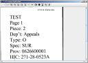

An advanced imaging widget for Java Swing applications
[Home] [FAQ] [General Usage] [Advanced Topics]
An easy to use, simple to extend, fast, and reliable Swing component. It utilizes Java2D for all rendering operations. It's built in an MVC fashion, with an additional image source abstraction. Abstracting the ImageSource allows you to easily load images (any BufferedImage will do) for manipulation from ImageIO and AWT classes. Support for multiple renderings in a single file (multi-page TIFF, animated GIF, etc.) exists, as does an ImageSource for compositing multiple ImageSources as layers of an image to display.
Basic image manipulation provided by Shimaging includes:
Shimaging is an actively maintained Swing imaging library with a standard Maven layout, Java 21 build target, shaded application jar output, and ImageIO-based TIFF support via TwelveMonkeys.
Shimaging targets Java 21 and uses the Maven Wrapper, so a separate Maven installation is optional.
./mvnw clean package ./mvnw test ./mvnw exec:java
The packaged application jar is written to target/shimaging-1.0.0-SNAPSHOT.jar.

A headless image manipulation library. It's not for loading / saving of images, annotation, etc. Although these behaviours could be (easily!) added via extension, that dosen't exist just yet. If you're interested in adding this behavior, we happily invite you to join the project and start contributing today!
I was working on a client project in 2009 and needed a Java-based imaging widget. For the life of me, I could not find one that fit our requirements. Without any other viable choice, it was time to start building one. The first implementation I made worked, but had far too many pitfalls, gotchas, and suffered from tremendously iterative design with a prototype mentality. Although the performance stunk, the design was a disaster, and the code was crufty at best, the initial set of classes worked well enough to get the application into testing and prove out the concept. I refactored, re-engineered, and drastically improved upon that initial prototype as the project progressed.
That first attempt was TIFF specific, relied heavily upon legacy image APIs, and stunk when it came to displaying, rotating, rescaling (contrast & brightness), and zooming. The only place it really was decent was loading images. Shimaging is the result of taking the time to sit down with what I had, evaluate what was good, document what was bad, and draw up a new design from scratch. Once I had the idea down on paper, I got to working on it, and over the course of about a week, Shimaging took form. It was written, tested, profiled, tweaked, poked, prodded, and finally re-integrated into the project that spawned the initial need for it. Since I started on Shimaging, I made sure I kept it's source as a separate library, so that it can be easily built and included as a dependency for any other project.
If you would like to contribute, report bugs, request features, or share feedback, I welcome the contributions.
Prior to taking the time to carefully design, document, build, benchmark, and tweak what is now Shimaging, I spent a lot more time searching and scouring over the internet for something similar that could be used in a Java Swing application. After several hours of not getting anywhere with the search and reviewing the initial prototype I thought, "Imaging, shimaging! There's GOT to be a better way."
Well, there is now.
Continue with General Usage or review common questions in the FAQ.